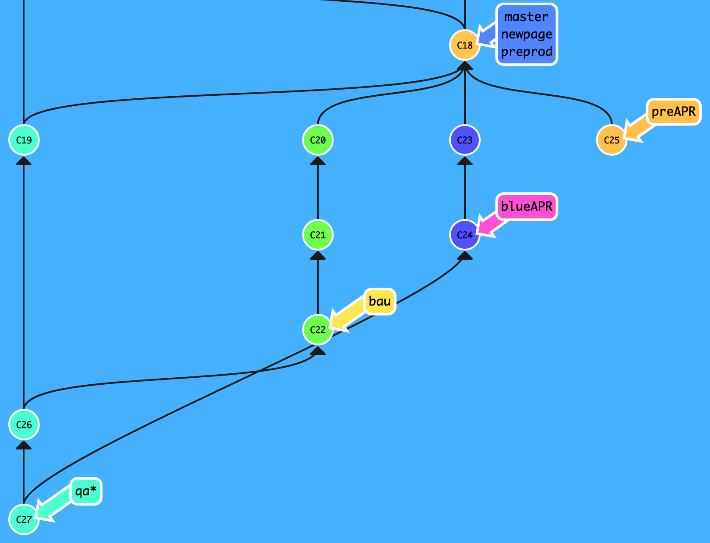
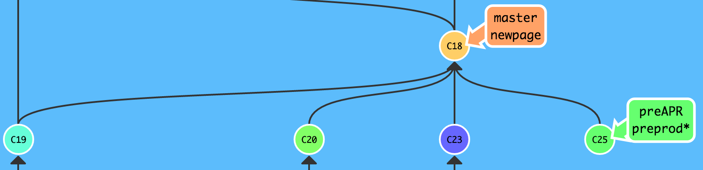

- C23 - Receive task to fix Blue APR, create
new branch
- C24 - Complete task, save changes, and update QA
- C27 - QA now shows both BAU and APR
- C25 - Phase 1 - Deploy-Prep
Change links to re-direct traffic


- C25 - Preprod is updated for pre-deploy QA
- C28 - PS is set to turn off blue and traffic
is being redirected, so preAPR goes live
- C29 - Make deploy branch for preparation
- C30 - Update branch with features being deployed
(In this case only blueAPR)
- Submit pull request to preprod
- Pull requests send up the necessary changes for
a senior to reivew before updating
a high level branch
- C31 - Justin or Ed have reviewed the pull request
and updated preprod
- C31 - Preprod has gone through QA and Justin
has updated the master version making
it live